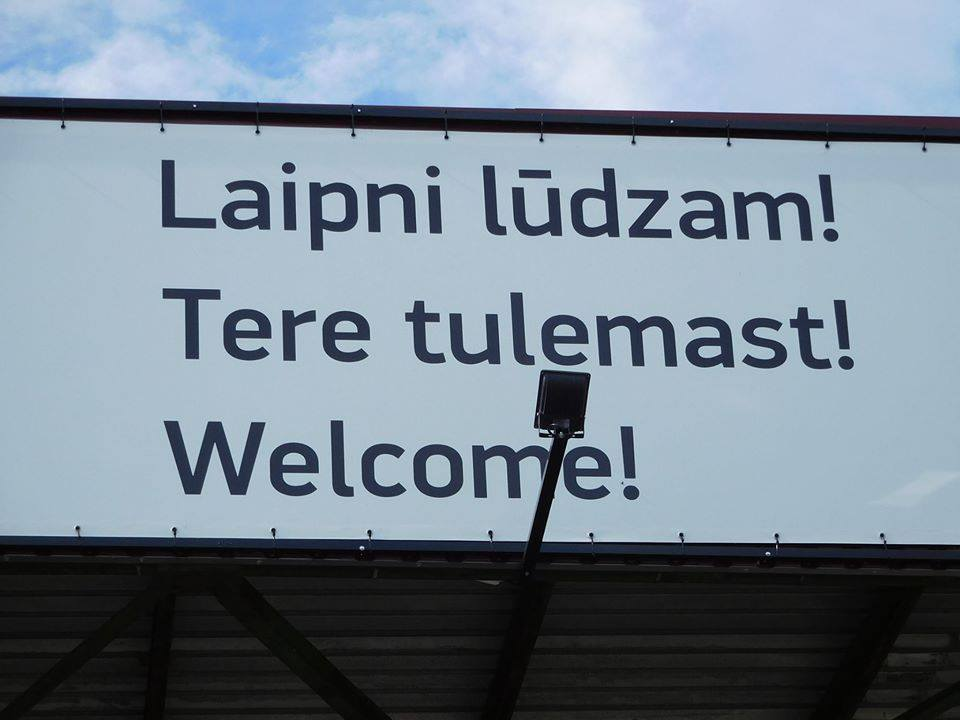
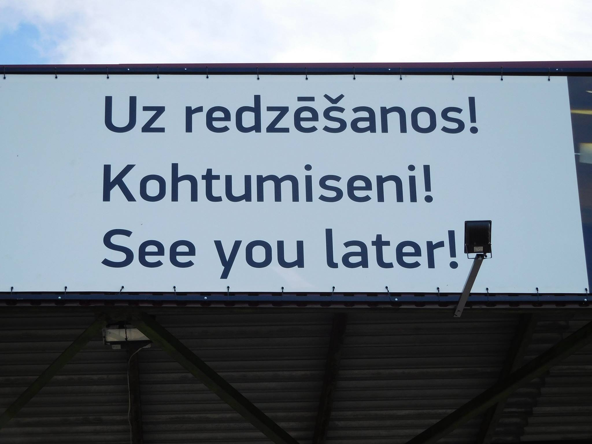

| About Phonetics and Phonology Morphology Syntax |
Typology |
Language Technology and Corpora Blog Resources |
|
|

Language contact has played an important part in languages absorbing vocabulary and grammar from one another. Language contact is a contributing factor to language change and is a fundamental area of research in Typology. Sometimes, as evidenced in my travel photos here, two very different languages from different language families end up as neighbors, and their speakers influence the languages. I noticed this while passing my time near the Estonian-Latvian border, noticing the traits of speech. Latvian has absorbed several words common in Estonian, and Estonian has likewise absorbed words and grammatical influences from Latvian. Very likely it is Latvian that has helped give Estonian differences-such as more fusional morphology-from its more conservative relative to the north-Finnish. Estonian and Finnish belong to the Balto-Finnc subgroup of the Finno-Ugric family. Latvian, along with Lithuanian, are the only two survivors of the Baltic subgroup of the Indo-European language family. Indo-European also includes English, German, French, Spanish, Russian, Polish, and a host of other languages.
Linguistic Typology is one of my favorite fields of research. It relies heavily on other linguistic applications in phonetics, phonology, morphology, and syntax. Knowledge of these subfields helps typologists more accurately describe and classify languages.
